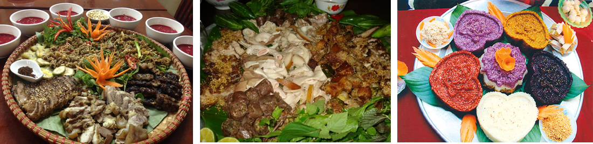

-
Kim Bôi cũng là vùng đất nổi tiếng về văn hóa dân gian, lễ hội truyền thống, Chiêng Mường mang đậm nét bản sắc văn hóa dân tộc Việt Mường.
- • Lễ hội Mường Động (Chiềng Động) xóm Chiềng, xã Vĩnh Đồng: Tổ chức ngày 07 - 08 tháng giêng âm lịch. Lễ hội diễn ra nhằm tưởng nhớ công đức của Vua cha, Vua Bà, Vua Con( tức hai vợ chồng Vua Hùng và con trai Vua hùng), ông Đinh Công Chinh - Thành hoàng làng. Lễ hội được tổ chức tại tại Chùa Động và Đình Động. Chùa Động xưa được đặt tại khu vực đỉnh đồi thuộc đất xóm Chiềng xã Vĩnh Đồng, hiện nay được chuyển xuống chân đồi thuộc vị trí phía Đông Nam của di tích mộ cổ Đống Thếch, xóm Chiềng, xã Vĩnh Đồng. Đình Động được đặt tại địa điểm Xóm Chiềng - xã Vĩnh Đồng một thời gian dài được trưng dụng xây dựng lại làm trụ sở UBND xã và hiện nay đã được sử chữa và hoạt động lại.
- • Lễ Khuống mùa tại Miếu Khụ Động xóm Chanh, xã Vĩnh Đồng được tổ chức vào ngày 07 tháng 3 âm lịch.
- • Hội chùa Sim xã Hợp Đồng được tổ chức vào ngày 14 - 15 tháng giêng âm lịch.
- • Hội Cơm thi và chọi trâu bò xóm Khả, xã Bắc Sơn được tổ chức vào ngày 04 - 06 tháng giêng âm lịch.
- • Lễ hội xuống đồng (5/4 âm lịch hàng năm).
- • Về ẩm thực có cơm lam, nếp nương, nếp cẩm, thịt gà nấu măng chua hạt dổi, thịt trâu lá chua (lá lồm), cá ốt (gói) đồ (hấp), cá chua, thịt chua các món chế biến từ các sản phẩm của rừng, sông, suối…các loại bánh chay, bánh hèm (nhân), bánh trôi, bánh nẳng, bánh uôi, bánh rán... và đồ uống như rượu xả, cơm đe (rượu cái), rượu cần, đặc biệt là nguồn nước khoáng có thể uống ngay tại mỏ nước khoáng ở xóm Mớ Đá xã Hạ Bì,... 
- • Cây nông nghiệp: Nhãn (xã Sơn Thủy) đã được Cục Sở hữu trí tuệ cấp giấy chứng nhận đăng ký nhãn hiệu số 264837 ngày 27/6/2016 và có 31 hộ thành viên được phép sử dụng nhãn hiệu tập thể nhãn Sơn Thủy, cây có múi (cam, quýt, bưởi) (Tú Sơn, Đú Sáng, Vĩnh Tiến,…), rau an toàn và cây đặc sản khác (Đú Sáng, Vĩnh Đồng, Hạ Bì, Thượng Bì, Hợp Kim, Nam Thượng,…) và nhiều cánh đồng lúa có cảnh quan đẹp ở các xã như Hợp Đồng, Hợp Kim, Kim Bôi, Nam Thượng,…
- • Âm nhạc có nhiều làn điệu cổ, dân gian, nhiều bài, nhiều phong cách trình diễn nhạc cụ đặc sắc như hoà tấu cồng chiêng xéc bùa, cò ke ống sáo (các bài nhị sáo truyền thống)... các thể loại ca như hát đối đáp trai gái, ví đúm, rằng thường, bộ mẹng, kể truyện thơ...các loại nhạc cụ tiêu biểu như trống đồng, trống da, trống đất, sáo dọc, sáo ngang, sáo ôi, kèn, bỉ ôi, nhị, tam, xinh tiền… và các điệu múa đặc trưng như múa bông, múa dâng hoa, múa cửa đình, múa nghi lễ, múa tín ngưỡng…
- • Trang phục, nhà ở: Những bộ trang phục với họa tiết giản dị, nhưng không kém đi sự tinh tế, đặc biệt là những nét hoa văn trên cạp váy đã tôn lên vẻ đẹp của người phụ nữ. Nhà ở của người dân bản địa là những ngôi nhà sàn lớn, mộc mạc, mái tranh hay lợp lá cọ, lợp ngói, ẩn khá kín dưới màu xanh của cây cối trồng quanh nhà.
- • Canh tác: Do địa hình dốc nên người dân bản địa canh tác trên ruộng bậc thang là chủ yếu, với các cây trồng như lúa nước, ngô, sắn...
- • Lễ hội, ẩm thực.
Khu mộ cổ Đống Thếch thuộc xóm Chiềng, xã Vĩnh Đồng, có từ nửa cuối thế kỷ 17 thời Lê với hàng ngàn cột đá lớn, nhỏ được khắc chữ Hán - Nôm. Những cột đá tảng, cái cao lênh khênh, cái thấp lè tè, tròn hoặc dẹt cắm quanh những ngôi mộ. Trước đây khu này rất rộng với hàng trăm ngôi mộ và hàng ngàn cột đá xanh được chôn xung quanh mỗi mộ giống như một rừng đá. Những cột đá xanh được lấy từ Thanh Hóa, cột đá to nhất có chiều rộng hơn 1m, cao khoảng 4m. Tất cả được dựng theo hình tròn có quy luật, ẩn dưới mỗi nấm mộ là những đồ tùy táng có giá trị khảo cổ… Phía đầu mộ chôn ba khối đá cao to nhất thành một hàng, phía chân mộ chôn ba khối nhỏ hơn, thấp hơn đối xứng với đầu mộ
Khu đống thếch có địa thế hình dáng miệng rồng, một thế đất quý theo thuật phong thủy của người xưa cho nên từ lâu đời dòng họ Đinh ở Mường động đã độc chiếm làm nghĩa địa cho riêng mình. Lật giở kho sử người Mường, người có công dựng nên xứ Mường Động là ông Đinh Văn Cương, người vùng Ngọc Lặc, Thanh Hóa. Do có công với triều đình nên ông đã được vua Lê, chúa Trịnh phong tước, đổi thành họ Đinh Công, cho cai quản xứ Mường Động, một trong những phên dậu phía tây bảo vệ kinh thành Thăng Long. Nổi bật trong dòng họ Đinh có Đinh Công Kỷ, một vị tướng giỏi của vua Lê, được phong tước quận công. Để con cháu đời sau không quên công đức, dòng họ danh giá này đã xây dựng mộ đá để mong tên tuổi các vị sẽ trường tồn cùng tuế nguyệt. Khu mộ cổ được chia làm hai khu, khu một là khu mộ của dòng họ Đinh là dòng họ lớn có thế lực ở huyện Kim Bôi có công lớn với triều Lê (Lê Trung Hưng) được cắt đất cai quản theo hình thức thế tộc, được hưởng quyền tập phong, khu hai là khu dành cho thân tộc của Uy lộc hầu (Đinh Công Kỷ) Thổ tù cai quản khu vực phía Bắc huyện Kim Bôi ngày nay. Năm 1997, khu mộ Đống Thếch được công nhận là di tích lịch sử khảo cổ cấp quốc gia. Các nhà khảo cổ học đã phát hiện rất nhiều hiện vật dưới mộ, đáng chú ý, những chiếc trống đồng loại nhỏ có niên đại từ thế kỷ 2-12 cùng nhiều đồ gốm sứ có xuất xứ từ các nước Nhật Bản,Trung Quốc có niên đạ từ thế kỷ 11-16. Điều này đã khẳng định sự giao lưu, buôn bán của người Mường Động đã phát triển thịnh vượng và mở rộng giao thương với nhiều nước trong khu vực.
LỄ HỘIHuyện Kim Bôi có nhiều dân tộc cùng sinh sống, trong năm mỗi vùng có nhiều lễ hội mang đậm bản sắc văn hóa dân tộc Mường, Dao, Thái, Tày, Hoa…với nhiều lễ hội như: Hội xuân, Lễ Khuống mùa, Dộng chùa, Lễ Hạ điền, Lễ Mừng cơm mới, Lễ mở cửa rừng, Hội đọc mong (săn thú), Hội đánh cá, Tết nhảy, Cấp sắc…và các trò chơi dân gian mang tính cộng đồng cao như tung còn, đánh mảng, đánh đuốn (quay), đánh khăng, cò le, đánh chó, buôn chó, chằm chỉ chằm chăn, chơi đu, thi đi cà kheo, kéo co, đẩy gậy, bắn nỏ, bói hoa, gọi nàng khọt...vẫn duy trì thường xuyên và một số trò chơi, lễ, hội đang được phục dựng, đặc biệt một số lễ hội thu hút đông đảo dân cư địa phương như:
Với đặc trưng là một huyện có địa hình nhiều đồi núi, dân cư chiếm đa phần là dân tộc Mường, do đó đặc trưng ẩm thực tại đây là ẩm thực dân tộc Mường: Văn hóa ẩm thực của người Mường được tạo nên từ những món ăn đơn giản, dân dã mang hương vị của núi rừng, sông suối. Điều đặc biệt nhất trong văn hóa ẩm thực người Mường là sử dụng lá chuối để bày các món ăn (cỗ lá), cỗ lá trở thành thương hiệu riêng của người Mường.
Với dân số khoảng 117,8 nghìn người, trong đó dân tộc Mường chiếm đa số khoảng 83% dân số toàn huyện, còn lại là dân tộc Kinh, Dao. Mỗi dân tộc đều có nền văn hóa đa dạng, mang đậm bản sắc riêng của từng dân tộc. Trong đó, dân tộc Mường chiếm đa số, là dân tộc bản địa gắn liền với văn hóa Hòa Bình ra đời cách đây hàng nghìn năm. Dân tộc Mường với những nét văn hóa truyền thống như: văn hóa Chiêng Mường, văn hóa "cơm đồ, nhà gác, nước vác, lợn thui, ngày lui tháng tới" với lễ hội, trang phục, nhà ở, phong tục tập quán, âm nhạc,… là điều kiện thuận lợi để phát triển du lịch văn hóa, cộng đồng.
Phong tục tập quán: Đám cưới cổ truyền của dân tộc Mường mang trong nó nhiều nét độc đáo đậm đà bản sắc văn hóa dân gian Mường. Đây là một trong những sinh hoạt văn hóa rất được đồng bào Mường coi trọng bởi nó bắt đầu một giai đoạn mới của đời người. Người Mường là một trong những dân tộc đặc biệt coi trọng hôn nhân. Lễ cưới cổ truyền Mường thường gồm có 4 bước chính: Dạm hỏi (Ti kháo thiếng), Ăn hỏi (Ti nòm), Ra mắt chàng rể (Ti cháu) và Lễ đón dâu (Xước du). người Mường còn rất coi trọng hình thức thách cưới. Họ cho rằng, qua lễ vật mà nhà gái thách cưới đối với nhà trai, nó thể hiện sự tôn trọng của nhà trai đối với công lao sinh thành và nuôi dưỡng người con dâu. Lễ vật đó cũng thể hiện sự trân trọng của nhà trai đối với nhà gái và để đáp ơn nhà gái đã trao con cho họ. Quan hệ cộng đồng cũng được thể hiện qua Lễ cưới truyền thống Mường, ở đó thể hiện những ứng xử khéo léo, đề cao các nghi thức của mối quan hệ con người với con người, con người với xã hội (gia đình mở rộng, cộng đồng làng, bản) tạo điều kiện cho những thành viên mới của một đơn vị xã hội mới (đôi vợ chồng trẻ) biết tôn trọng nhau và biết củng cố sự bền chặt mối quan hệ của mình. Đây chính là ý nghiã đích thực của lễ cưới truyền thống người Mường trong đời sống văn hoá- xã hội hôm nay.